#minecraft:sulfur_cube_archetype/fast_flat
物品标签 · 26 个已收录成员
标签成员 (26)
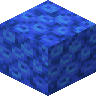
管珊瑚块minecraft:tube_coral_block
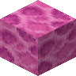
脑纹珊瑚块minecraft:brain_coral_block
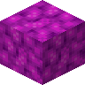
气泡珊瑚块minecraft:bubble_coral_block
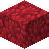
火珊瑚块minecraft:fire_coral_block
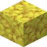
鹿角珊瑚块minecraft:horn_coral_block
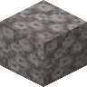
失活的管珊瑚块minecraft:dead_tube_coral_block
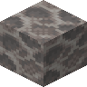
失活的脑纹珊瑚块minecraft:dead_brain_coral_block
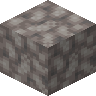
失活的气泡珊瑚块minecraft:dead_bubble_coral_block
 失活的火珊瑚块
失活的火珊瑚块minecraft:dead_fire_coral_block
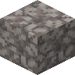
失活的鹿角珊瑚块minecraft:dead_horn_coral_block
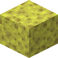
海绵minecraft:sponge
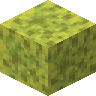
湿海绵minecraft:wet_sponge
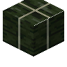
干海带块minecraft:dried_kelp_block
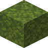
苔藓块minecraft:moss_block
 苍白苔藓块
苍白苔藓块minecraft:pale_moss_block
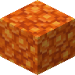
树脂块minecraft:resin_block
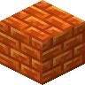
树脂砖块minecraft:resin_bricks
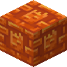
雕纹树脂砖块minecraft:chiseled_resin_bricks
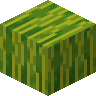
西瓜minecraft:melon
 干草捆
干草捆minecraft:hay_block
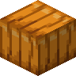
南瓜minecraft:pumpkin
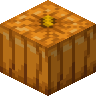
雕刻南瓜minecraft:carved_pumpkin南瓜灯
minecraft:jack_o_lantern
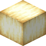
赭黄蛙明灯minecraft:ochre_froglight
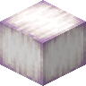
珠光蛙明灯minecraft:pearlescent_froglight
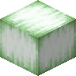
青翠蛙明灯minecraft:verdant_froglight
使用该标签的配方
无